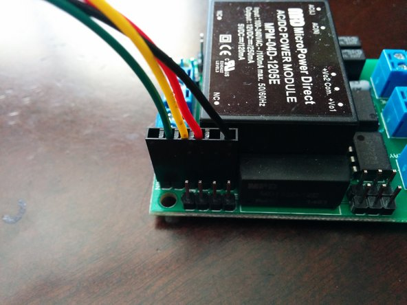
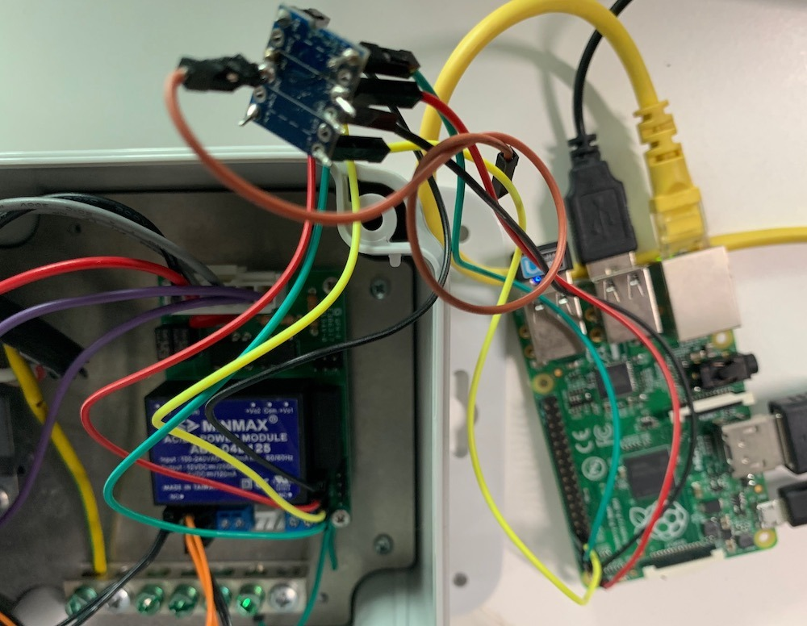

Introduction
Raspberry Pi is capable of doing serial communication using the
GPIO pins 14 and 15.
Setting Raspberry Pi Serial Ports is expected to be simple and straightforward. Instead, it is confusing because online instructions are not very clear on the issues
that one encounters when using different Raspberry Pi models. Following article is an attempt to set up the serial communication from your Raspberry Pi.
To make it crystal clear, here we are talking about the physical serial pins 8, TxD, also referred to as BCM 14 and physical pin 9, RxD also referred to as BCM 15.
Another vital thing to note here is that these serial pins work at 0-3.3 Volts. While connecting it to external devices ensure that they also are 0-3.3V devices.
Note that TxD or Raspberry pi connects to RxD of the external device and similarly for the other pins. These pins collectively are also known as
UART(Universal Asynchronous Receiver/Transmitter) pins.
Raspberry Pi UART
Raspberry Pi has two in-built UART, which are as follows:
PL011 UART is an ARM-based UART. This UART has better throughput than
mini UART.
In older versions of Raspberry Pi, the ones that do not have onboard wifi and Bluetooth module, the PL011 UART was allocated to BCM 14 and 15.

Raspberry pi UART pins
In the newer version of Raspberry Pi's the PL011 is connected to the On-board Bluetooth module. By default, Mini UART is available but linked to the core frequency of GPU.
This dependency on GPU frequency makes mini UART on newer pi's unstable for most serial applications. The PL011 is a stable and high-performance UART.
For better and effective communication use PL011 UART instead of mini UART.
Configure UART on Raspberry Pi
In the section below, we will look at how to configure and use UART ports effectively for both the older and newer versions of Raspberry Pi.
Older version of Raspberry Pi
Following instructions are for Raspberry Pis that do not have onboard Bluetooth module and PL011 UART module is assigned to the BCM pins 14 and 15.
Step 1. Enable kernel UART
Login into the Raspberry Pi and on console edit /boot/config.txt. Look for "enable_uart" configuration. If present change it, if not add it, so that you have following entry in your /boot/config.txt:
[su_highlight background="#fdfbc7"]enable_uart=1[/su_highlight]
Step 2. Edit the file cmdline.txt.
By default it contains the following:
[su_highlight background="#fdfbc7"]dwc_otg.lpm_enable=0 console=tty1 root=/dev/mmcblk0p2 rootfstype=ext4 elevator=deadline rootwait[/su_highlight]
Change the value of console so that it looks like below:
[su_highlight background="#fdfbc7"]dwc_otg.lpm_enable=0 console=/dev/ttyAMA0,115200 root=/dev/mmcblk0p2 rootfstype=ext4 elevator=deadline fsck.repair=yes rootwait[/su_highlight]
This entry 'console=/dev/ttyAMA0,115200' is only needed if you are connecting a device to access linux console. In case you are connecting it another serial device then completly remove this entry. In case of a serial device also disable the serial console related linux processes:
&npsp;
$ sudo systemctl stop serial-getty@ttyAMA0.service
$ sudo systemctl disable serial-getty@ttyAMA0.service
&npsp;
Step 3. Reboot
Aftre a reboot changes take effect and your serial ports are set to communicate with other serial devices.
Raspberry pi with the onboard Bluetooth module
Following instructions are for Raspberry Pi's that have in-built Bluetooth module using the physical PL011 UART.
Step 1: Disable use of Pl011 UART by Bluetooth module
Login into the Raspberry Pi and on console edit /boot/config.txt. Look for "dtoverlay=pi3-disable-bt" configuration. If present change it, if not add it, so that you have following entry in your /boot/config.txt:
[su_highlight background="#fdfbc7"]dtoverlay=pi3-miniuart-bt [/su_highlight]
This step will force the Bluetooth module to use mini UART, and thus become slightly unstable.
Also, disable the system services that use the UART module:
[su_highlight background="#fdfbc7"]sudo systemctl disable hciuart [/su_highlight]
Step 2:
Edit the file cmdline.txt.
By default it contains the following:
[su_highlight background="#fdfbc7"]dwc_otg.lpm_enable=0 console=tty1 root=/dev/mmcblk0p2 rootfstype=ext4 elevator=deadline rootwait[/su_highlight]
Change the value of console so that it looks like below:
[su_highlight background="#fdfbc7"]dwc_otg.lpm_enable=0 console=/dev/ttyAMA0,115200 root=/dev/mmcblk0p2 rootfstype=ext4 elevator=deadline fsck.repair=yes rootwait[/su_highlight]
Note that 115200 is the frequency at which the serial communication will happen. Check if this is compatible with the device you are planning to connect.
Step 3. Reboot
After a reboot changes take effect and your serial ports are set to communicate with other serial devices.
Using serial communication using Raspberry Pi Serial Ports
 OpenEVSE FTDI Port

OpenEVSE FTDI to Raspberry Pi Serial Port
In our case, we intended to connect Raspberry pi to OpenEvse
electric vehicle charger on its serial port.
The module that speaks UART is shown on the left while the right figure shows the connection via a level shifter to Raspberry Pi.
We are reproducing some python code here that is generic and can help you troubleshoot your serial connection.
Python code to read from the serial port (read.py):
#!/usr/bin/env python
import time
import serial
ser = serial.Serial(
port='/dev/ttyAMA0',
baudrate = 115200,
parity=serial.PARITY_NONE,
stopbits=serial.STOPBITS_ONE,
bytesize=serial.EIGHTBITS,
timeout=3
)
while 1:
x=ser.readline()
if len(x)>1:
print x
time.sleep(2)
Python code to write to the serial port(write.py):
#!/usr/bin/env python
import time
import serial
ser = serial.Serial(
port='/dev/ttyAMA0',
baudrate = 115200,
parity=serial.PARITY_NONE,
stopbits=serial.STOPBITS_ONE,
bytesize=serial.EIGHTBITS,
timeout=5
)
while 1:
var = raw_input(">>: ")
print "you entered", var.strip()
ser.write("%s\r"%var)
time.sleep(2)
For more information do get in
touch.